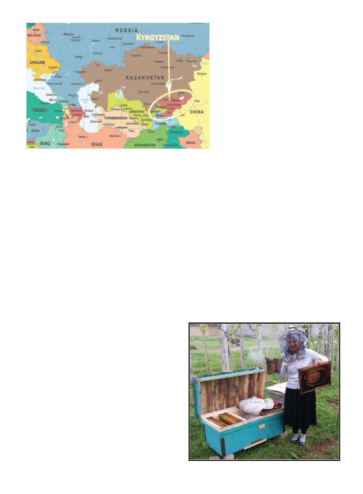

June 2019
701
I
f you were to follow the ancient
Silk Road east out of Europe
across a thousand miles of grassy
plains, through Turkmenistan, Uz-
bekistan and Tajikistan, north of Af-
ghanistan and south of Kazakhstan,
the “Mountains of Heaven” would
rise up like a serrated wall before you.
You would journey into their impos-
ing embrace in the broad and fertile
Fergana Valley, at the end of which
lies the 3,000-year-old city of Osh, un-
der a rocky outcrop noted in ancient
sources as the “Stone Tower.” You
have arrived in Kyrgyzstan.
Once, caravans of snorting camels
had stopped here to prepare to cross
the mountains, but now it is dusty and
post-soviet, full of crumbling monu-
ments and grey apartment blocks. A
statue of Lenin still graces a central
square, his hand outstretched as if to
say “look upon my works!” but you
turn your back on him and head to-
ward the mountains, past a prouder,
more modern statue of Kyrgyz folk
hero Manas astride his horse holding
his sword valiantly aloft. Follow the
approximate route of the Silk Road
for two more hours by car up wind-
ing roads surrounded by increasingly
large green hills, occasionally waiting
for shepherds on horseback to move
their sheep off the road, until you
come to a village named Kenesh be-
side the icey Kara Darya river.
The river valley seems stark and
empty in the cold of early Spring. Oth-
er than the village and river, there is
nothing in sight but grass and distant
herds of sheep or horses. The “Moun-
tains of Heaven,” the Tian Shan, loom
at one end, and the Fergana Valley at
the other. The village itself consists
of a smattering of dusty off-white
houses punctuated with cheery red or
blue hand-carved wooden scrollwork
along the eaves. Each house has its
own yard delineated by a rustic fence
of rough branches, and each yard
contains a kitchen garden, some fruit
trees in the very beginnings of blos-
som, the family horses and maybe a
cow or two. Some sheds and barns
are actually thatched. The car rolls
into one such yard, I walk past a row
of strangely large beehives set under
some cherry trees resplendent with
pinkish-white blossoms; I have ar-
rived at my destination.
We no longer live in the days of
Bactrian camels plodding the silk
road, but still it took me 44.5 hours
to fly from Melbourne to Canton to
Paris to Istanbul to the Kyrgyz capital
at Bishkek. Snow storms had blocked
the passes to drive from from Bishkek
to Kenesh so it had taken one more
flight from Bishkek to Osh, and here
I was, exhausted. It was March 2016,
and I had traded the onset of Autumn
in Australia, where I’d been living,
for two weeks in the crisp beginnings
of Spring in Kyrgyzstan.
After this very long and arduous
journey I was excited in the morning
to have a look at those hives and see
what the situation was. With the sev-
eral trainees assembled in the flowery
yard, we went to inspect the beehives
under the cherry trees … only to find
every single one full of dead bees.
Freshly piled on the baseboard, di-
agnosis: recent and sudden. It would
seem that in preparation to not have an
embarrassing amount of varroa mites
when the “bee expert” arrived, they
had given them an extra strong dose
of miticide the day before I arrived. I
mentally facepalm and look to the sky,
thinking of all the USAID money that
went into getting me to this remote vil-
lage, to say nothing of my volunteered
time. Welcome to aid work.
Kyrgyzstan
by KRIS FRICKE
Interpreter Nurzat
models the
equipment in front
of one of the hives
that had been
killed.
Beekeeping
Development
Project: